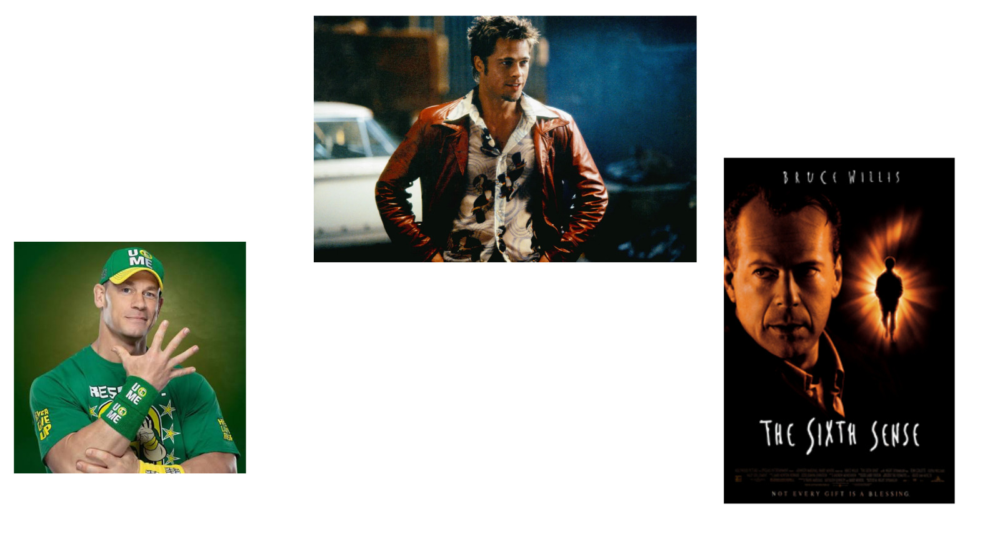
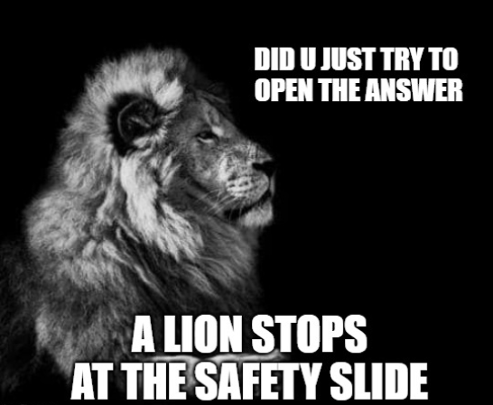
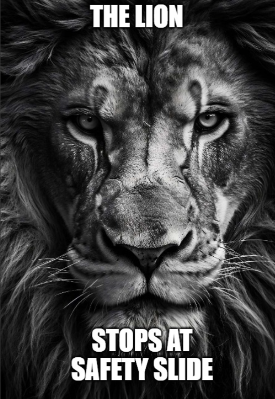
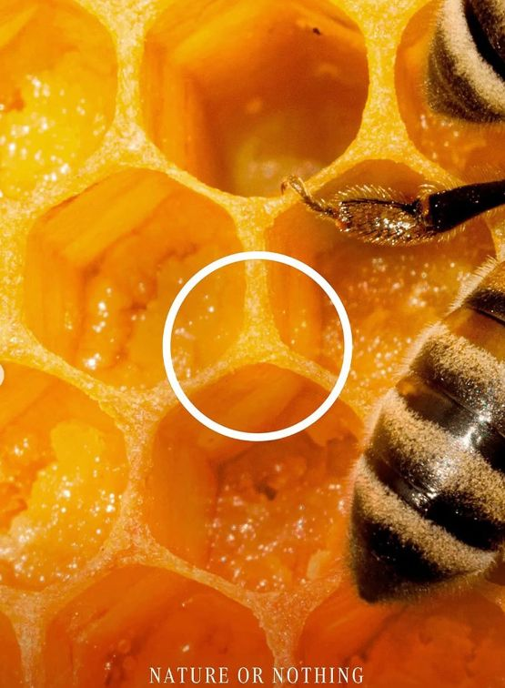
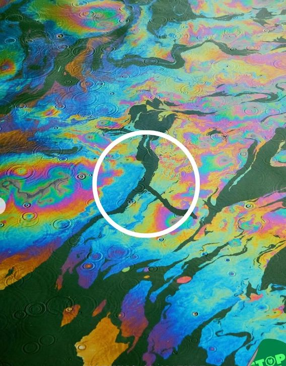
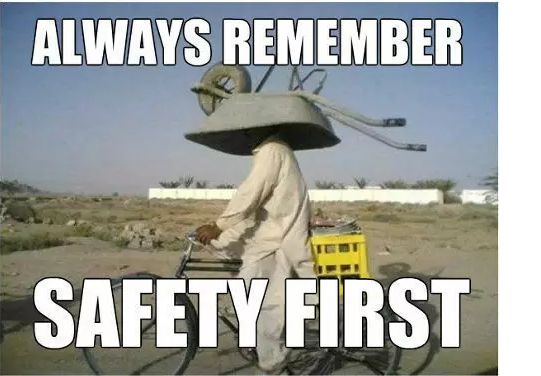
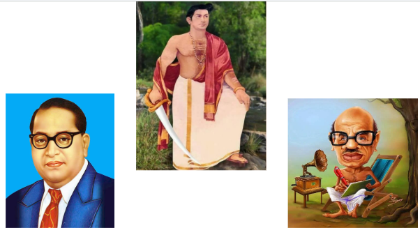
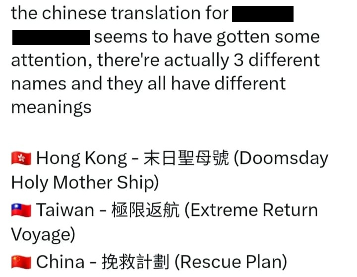
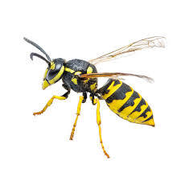

Rules
Rules
- There will be 20 questions in the prelims.
- Questions 4, 8, 12, 16, 20 will be starred questions worth 2 points each.
- All other questions are worth 1 point each.
- All blanks are indicative.
- Top 6 teams will qualify for the finals.
- In case of a tie, the number of starred questions answered will be taken into consideration.
- Only 1 team from a school can enter the finals.
Question 1
A screenwriter spent years crafting a story so strange and layered with meaning that every major
production house he approached turned him away. The script collected dust for nearly a decade
while the writer waited. Eventually, a streaming platform that had built its reputation on
taking bets decided to give it a chance. When it finally aired in September 2021, it became the
single most watched show on that platform across the entire globe.
Which show is being described?

Answer
Squid GameQuestion 2
During the FIFA World Cups, supporters of Japan have become known for a post-match ritual that
has earned respect around the world. They use X for two different purposes at FIFA World Cups.
Television cameras have captured thousands of supporters waving X in celebration. Hours later,
the very same objects had quietly disappeared from the stand because fans had repurposed them
for a task that earned worldwide praise. Though inexpensive, X has become an enduring symbol of
that tradition.
Identify X.

Answer
Blue Trash BagsQuestion 3
Put Funda

Answer
You cant see them.Question 4
Connect

Answer
Revanth ReddyQuestion 5
Of the many plans devised to assassinate Adolf Hitler in World War II, one proposed by British
intelligence involved secretly adding a certain substance to his food. The idea was that it
would make him behave more like his only surviving direct family member and become more
"mild-mannered." The proposal was inspired by then-recent research in a particular field of
medicine.
Identify the substance.

Answer
EstrogenQuestion 6
Identify the movie from which the inspiration for the speech given in the below audio was accused to be drawn from.

Answer
Hunger GamesQuestion 7
In 2022, ‘X’ Mexico launched a campaign called “Nature or Nothing” to promote their electric
products. The campaign faced criticism for "greenwashing," with some environmental groups
arguing that the marketing attempted to make the company seem eco-friendly, while they
themselves were ironically contributing to severe environmental issues.
Identify X.



Answer
MercedesQuestion 8
Connect

Answer
Mammootty
Question 9
Orthometals is a Dutch company founded in 1997 and have their
presence in more than 700 institutions in 20 countries across the
world. The world leader in their field, they collect over 250 tonnes
of valuable material such as Titanium and Cobalt alloy from these
places every year, and sell it to aircraft and automobile companies
for use in the manufacture of planes and cars.
What is this unique source of all this material (it's all around us)?
Answer
Cremated Remain/Human RemainsQuestion 10
The exact origin of this legendary dish is
highly debated, though one popular story traces it back to the Nawab of Arcot creating a rich,
hearty meal for his soldiers. Today, it is an absolute staple of Indian cuisine with countless
regional variations—and it's so beloved that a dehydrated version was even developed for Indian
astronauts to take into space.
Identify this iconic dish
Answer
Biriyani
Question 11
In September, Country 'X' faced a massive
political crisis triggered by a sudden government ban on 26 major social media platforms,
including Facebook and WhatsApp. Organised through digital tools like VPNs and Discord, the
youth-led anti-corruption protests quickly escalated, leading to clashes, the resignation of the
Prime Minister, and a historic new election.
Identify the country 'X'
Answer
NepalQuestion 12
Identify the movie mentioned in the social media post below.

Answer
Project Hail MaryQuestion 13
"What .. isn't it strong? 🧐
The truth is that we don't pay enough attention to choosing a password. It is mandatory for
online accounts to have a minimum of 8 characters for passwords.""
This was the description of social media post made by a famous organization Y, on the saves made
by
Vozinha of the Cape Verde FIFA team. Y is a very famous government organization, known for their
famous motto - "Soft in Temperament, Firm in Action". Y's logo includes an elephant with an
upraised trunk.
Identify Y.
Answer
Kerala PoliceQuestion 14
During the First Gulf war, the US military enlisted chickens for detection of poisonous gases in the battlefield. Designated as “Poultry Chemical Confirmation Devices”, this initiative was soon abandoned when it proved ineffective due to the perishing of most of the chickens within a week of their deployment in Kuwait. This project was also referred to by an appropriate acronym. What was this acronym?
Answer
KFCQuestion 15
Two science-fiction books played a major role in shaping X. Its personality was heavily inspired
by The Hitchhiker's Guide to the Galaxy, leading developers to give it a witty, sarcastic, and
occasionally rebellious tone. Engineers also drew inspiration from JARVIS, the fictional A.I.
from Iron Man. Its name itself was borrowed from a term coined in another science-fiction novel
meaning "to understand deeply and intuitively."
Identify X.
Answer
GrokQuestion 16
Connect the pictures given and identify the character.
 |
|
Answer
Pennywise, the clownQuestion 17
Critics initially wrote off this August 15, 1975 release as a flop, but incredible word-of-mouth
transformed it into an absolute milestone of Indian cinema.
It went on to smash box office records, running for over five years at Mumbai's Minerva theatre
and becoming a massive hit in the Soviet Union. Following a legendary duo, it became the
highest-grossing Indian film of its time.
Identify the movie.
Answer
SholayQuestion 18
Identify the movie from minimalist poster
Answer
ManichitratazhuQuestion 19
This song titled "Scream" was released by Michael Jackson in 1995. It was released as a reply to all the accusations against him. In this song, Michael collaborated with a female artist who was one of the few people who supported Michael against his accusation. Identify this woman.
Answer
Janet JacksonQuestion 20
What connects these 4 places?


Answer
The Henge PhenomenonTO DARE IS TO KNOW
Extra Questions
Question 21
In 2021, a sports club named after a massive business conglomerate founded by two former Soviet KGB officers made global headlines. By defeating powerhouse Real Madrid at the Santiago Bernabéu Stadium, they brought unprecedented international attention to a narrow, self-proclaimed sovereign state. While the club competes in the Moldovan National Division, it is physically based in a breakaway territory that functions as a de facto independent country—complete with its own constitution, military, and plastic rubles—yet remains entirely unrecognized by any UN member state. What is the name of this disputed territory, located between the Dniester River and the eastern Moldovan border with Ukraine?
Answer
TransnistriaQuestion 22
‘X’ is an Indian theoretical physicist widely known for his work on String Theory. He solved puzzles that even baffled Einstein’s successors. In 2012, he got a call. He had won the Fundamental Physics prize, a whooping 3 million dollars. Most people would buy a mansion, but he donated the money to students and went back to his lab to continue his research.
Answer
Ashoke SenQuestion 23
In 2014, three young graduates, two from BITS Pilani and one from IIT Kharagpur started a tiny delivery service for a specific commodity. Today, it is a multi-billion dollar public entity operating across over 600 cities in India. Currently, this company is India's pioneering on-demand convenience platform, catering to millions of consumers each month. Due to the pioneering status of this company, it is well-recognised as a leader in innovation in hyperlocal commerce and a category-defining brand; trusted, intuitive and deeply embedded in the daily routines of millions of Indians. Their most recognized and enduring tagline is "Delivering Happiness at Your Doorstep." Identify this platform, whose sales skyrocketed during the 2026 IPL season, due to a specific offer available on it at that time.